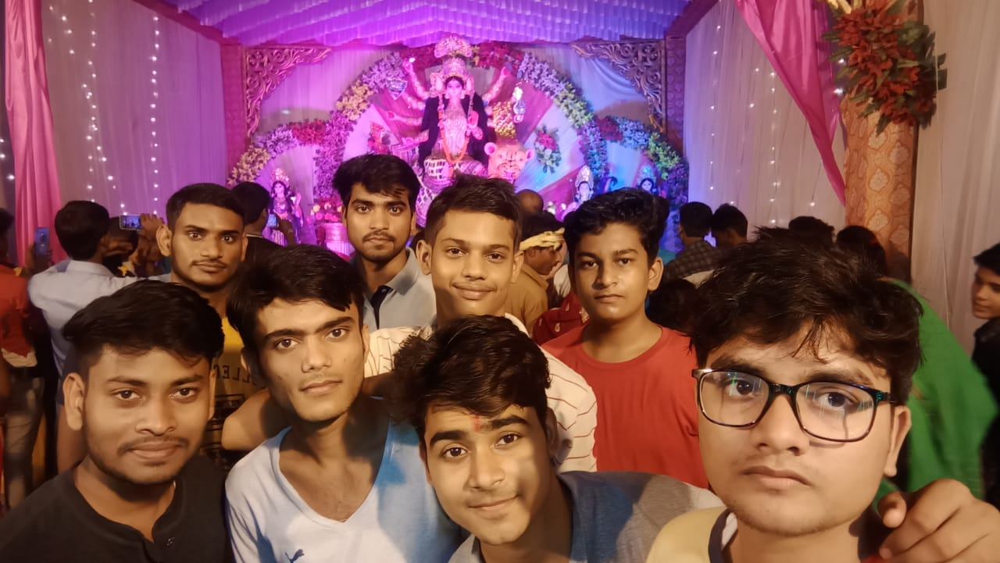
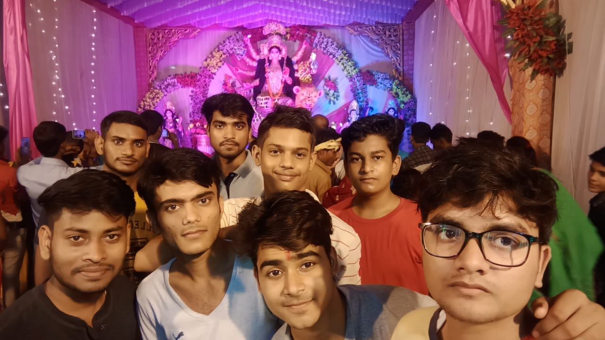

Durga Puja
Durga puja celebration has its own craze in Sultanpur.You can find so many people around walking.......
Durga puja celebration has its own craze in Sultanpur.You can find so many people around walking.......

This is the style of Durga Puja Festival in the district. As soon as the immersion started, the devotees broke up. The chanting of Jai Mata Di echoing and the devotional songs playing in the pandals, the devotees are seen queuing up everywhere in the city for late night to visit the Mother Goddess. The idols of the majestic Devi, enshrined in the huge puja pandals as models of famous temples, also seem to be staring at the devotees. Colorful lights are lighting up the festival in decoration. The excitement of Durga Puja Festival in the city has started increasing with the Vijayadashami festival. In the huge pandals, devotees are flocking to see the Mother Goddess. People come from every corner of the country to see the supernatural scenes of temples in India and abroad. Somewhere the court of Mother Kamru Kamaksha, Somewhere, Hinglaj Devi Bhawani's pandals are lighting the moon. Chanting devotional songs and every street, hundreds of Goddess idols installed in the market, grand pandals, Jagratas and goddess awakening have been sanctified. Devotees of the mother are seen in areas such as Chowk, Golaghat Dakkhana Chouraha, Karaundia, GN Road, Gallamandi, Shahganj, Majorganj, NationalTalkies Road etc.